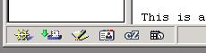
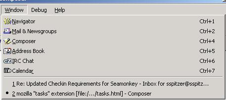

It is possible to configure Mozilla Seamonkey to add UI elements to launch your native calendar.
How do I use it?
Assuming you have a build with the tasks extension, all you need to do is set the "task.calendar.location" pref.
For example, if you are on Windows and you used the CS&T calendar that shipped with Netscape 4.5, all you have to do is add this pref to your prefs.js file:
user_pref("task.calendar.location", "C:\\Program Files\\Netscape\\Communicator\\Calendar\\nscal32.exe");
Or, use about:config to add a string pref
with name task.calendar.locationand value
C:\Program Files\Netscape\Communicator\Calendar\nscal32.exeWhere does the UI show up?
For Mozilla Seamonkey, the calendar UI will show up in the same places the calendar UI shows up when you have installed the Mozilla Calendar xpi.
The UI will show up in the tasks bar:

and the Window menu:

What will happen if I have the tasks extension, but I don't set the "tasks.calendar.location" pref?
No calendar UI will show, unless you install the Mozilla calendar xpi
What will happen if I have the tasks extension, and I've set the "tasks.calendar.location" pref, and I install the Mozilla calendar xpi?
You'll see the calendar UI, but it will launch the Mozilla calendar, and not calendar pointed to by the "tasks.calendar.location" pref.
How do I build it?
To your mozconfig file, you'll need to do something like:
ac_add_options --enable-extensions=default,tasksIs it part of Mozilla 1.6?
No, but we hope to turn it on by default for Mozilla 1.7a.
(See http://bugzilla.mozilla.org/show_bug.cgi?id=231778)
Is there an xpi for it?
Not at this time.
Is it part of Thunderbird 0.x for Firefox 0.x?
The extension needs to be ported to work with Thunderbird.
(See http://bugzilla.mozilla.org/show_bug.cgi?id=227652)
There are no plans to make it work for Firefox, which is why it isn't a default extension.